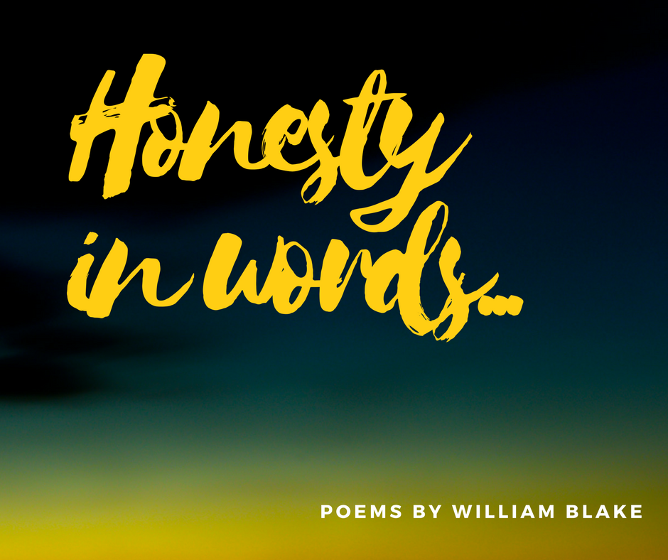

A little bit of Blake's background...
William Blake was born in London on November 28, 1757, to James, a hosier, and Catherine Blake.
Two of his six siblings died in infancy. From early childhood, Blake spoke of having visions—at four
he saw God “put his head to the window”; around age nine, while walking through the countryside, he
saw a tree filled with angels. Although his parents tried to discourage him from “lying," they did
observe that he was different from his peers and did not force him to attend conventional school.
He learned to read and write at home. At age ten, Blake expressed a wish to become a painter, so his
parents sent him to drawing school. Two years later, Blake began writing poetry. When he turned
fourteen, he apprenticed with an engraver because art school proved too costly. One of Blake’s
assignments as apprentice was to sketch the tombs at Westminster Abbey, exposing him to a variety of
Gothic styles from which he would draw inspiration throughout his career. After his seven-year term
ended,he studied briefly at the Royal Academy.
In 1782, he married an illiterate woman named Catherine Boucher. Blake taught her to read and to
write, and also instructed her in draftsmanship. Later, she helped him print the illuminated poetry
for which he is remembered today; the couple had no children. In 1784 he set up a printshop with a
friend and former fellow apprentice, James Parker, but this venture failed after several years. For
the remainder of his life, Blake made a meager living as an engraver and illustrator for books and
magazines. In addition to his wife, Blake also began training his younger brother Robert in drawing,
painting, and engraving. Robert fell ill during the winter of 1787 and succumbed, probably to
consumption. As Robert died, Blake saw his brother’s spirit rise up through the ceiling, “clapping
its hands for joy.” He believed that Robert’s spirit continued to visit him and later claimed that
in a dream Robert taught him the printing method that he used in Songs of Innocence and other “illuminated”
works.
Blake's Poems...
Auguries Of Innocence
To see a World in a Grain of Sand
And a Heaven in a Wild Flower,
Hold Infinity in the palm of your hand
And Eternity in an hour.
A Robin Red breast in a Cage
Puts all Heaven in a Rage.
A dove house fill'd with doves & Pigeons
Shudders Hell thro' all its regions.
A dog starv'd at his Master's Gate
Predicts the ruin of the State.
A Horse misus'd upon the Road
Calls to Heaven for Human blood.
Each outcry of the hunted Hare
A fibre from the Brain does tear.
A Skylark wounded in the wing,
A Cherubim does cease to sing.
The Game Cock clipp'd and arm'd for fight
Does the Rising Sun affright.
Every Wolf's & Lion's howl
Raises from Hell a Human Soul.
The wild deer, wand'ring here & there,
Keeps the Human Soul from Care.
The Lamb misus'd breeds public strife
And yet forgives the Butcher's Knife.
The Bat that flits at close of Eve
Has left the Brain that won't believe.
The Owl that calls upon the Night
Speaks the Unbeliever's fright.
He who shall hurt the little Wren
Shall never be belov'd by Men.
He who the Ox to wrath has mov'd
Shall never be by Woman lov'd.
The wanton Boy that kills the Fly
Shall feel the Spider's enmity.
He who torments the Chafer's sprite
Weaves a Bower in endless Night.
The Catterpillar on the Leaf
Repeats to thee thy Mother's grief.
Kill not the Moth nor Butterfly,
For the Last Judgement draweth nigh.
He who shall train the Horse to War
Shall never pass the Polar Bar.
The Beggar's Dog & Widow's Cat,
Feed them & thou wilt grow fat.
The Gnat that sings his Summer's song
Poison gets from Slander's tongue.
The poison of the Snake & Newt
Is the sweat of Envy's Foot.
The poison of the Honey Bee
Is the Artist's Jealousy.
The Prince's Robes & Beggars' Rags
Are Toadstools on the Miser's Bags.
A truth that's told with bad intent
Beats all the Lies you can invent.
It is right it should be so;
Man was made for Joy & Woe;
And when this we rightly know
Thro' the World we safely go.
Joy & Woe are woven fine,
A Clothing for the Soul divine;
Under every grief & pine
Runs a joy with silken twine.
The Babe is more than swadling Bands;
Throughout all these Human Lands
Tools were made, & born were hands,
Every Farmer Understands.
Every Tear from Every Eye
Becomes a Babe in Eternity.
This is caught by Females bright
And return'd to its own delight.
The Bleat, the Bark, Bellow & Roar
Are Waves that Beat on Heaven's Shore.
The Babe that weeps the Rod beneath
Writes Revenge in realms of death.
The Beggar's Rags, fluttering in Air,
Does to Rags the Heavens tear.
The Soldier arm'd with Sword & Gun,
Palsied strikes the Summer's Sun.
The poor Man's Farthing is worth more
Than all the Gold on Afric's Shore.
One Mite wrung from the Labrer's hands
Shall buy & sell the Miser's lands:
Or, if protected from on high,
Does that whole Nation sell & buy.
He who mocks the Infant's Faith
Shall be mock'd in Age & Death.
He who shall teach the Child to Doubt
The rotting Grave shall ne'er get out.
He who respects the Infant's faith
Triumph's over Hell & Death.
The Child's Toys & the Old Man's Reasons
Are the Fruits of the Two seasons.
The Questioner, who sits so sly,
Shall never know how to Reply.
He who replies to words of Doubt
Doth put the Light of Knowledge out.
The Strongest Poison ever known
Came from Caesar's Laurel Crown.
Nought can deform the Human Race
Like the Armour's iron brace.
When Gold & Gems adorn the Plow
To peaceful Arts shall Envy Bow.
A Riddle or the Cricket's Cry
Is to Doubt a fit Reply.
The Emmet's Inch & Eagle's Mile
Make Lame Philosophy to smile.
He who Doubts from what he sees
Will ne'er believe, do what you Please.
If the Sun & Moon should doubt
They'd immediately Go out.
To be in a Passion you Good may do,
But no Good if a Passion is in you.
The Whore & Gambler, by the State
Licenc'd, build that Nation's Fate.
The Harlot's cry from Street to Street
Shall weave Old England's winding Sheet.
The Winner's Shout, the Loser's Curse,
Dance before dead England's Hearse.
Every Night & every Morn
Some to Misery are Born.
Every Morn & every Night
Some are Born to sweet Delight.
Some ar Born to sweet Delight,
Some are born to Endless Night.
We are led to Believe a Lie
When we see not Thro' the Eye
Which was Born in a Night to Perish in a Night
When the Soul Slept in Beams of Light.
God Appears & God is Light
To those poor Souls who dwell in the Night,
But does a Human Form Display
To those who Dwell in Realms of day.
A Divine Image
Cruelty has a human heart,
And Jealousy a human face;
Terror the human form divine,
And Secresy the human dress.
The human dress is forged iron,
The human form a fiery forge,
The human face a furnace sealed,
The human heart its hungry gorge.
The Angel
I dreamt a dream! What can it mean?
And that I was a maiden Queen
Guarded by an Angel mild:
Witless woe was ne'er beguiled!
And I wept both night and day,
And he wiped my tears away;
And I wept both day and night,
And hid from him my heart's delight.
So he took his wings, and fled;
Then the morn blushed rosy red.
I dried my tears, and armed my fears
With ten-thousand shields and spears.
Soon my Angel came again;
I was armed, he came in vain;
For the time of youth was fled,
And grey hairs were on my head.
A Cradle Song
Sweet dreams form a shade,
O'er my lovely infants head.
Sweet dreams of pleasant streams,
By happy silent moony beams
Sweet sleep with soft down.
Weave thy brows an infant crown.
Sweet sleep Angel mild,
Hover o'er my happy child.
Sweet smiles in the night,
Hover over my delight.
Sweet smiles Mothers smiles,
All the livelong night beguiles.
Sweet moans, dovelike sighs,
Chase not slumber from thy eyes,
Sweet moans, sweeter smiles,
All the dovelike moans beguiles.
Sleep sleep happy child,
All creation slept and smil'd.
Sleep sleep, happy sleep.
While o'er thee thy mother weep
Sweet babe in thy face,
Holy image I can trace.
Sweet babe once like thee.
Thy maker lay and wept for me
Wept for me for thee for all,
When he was an infant small.
Thou his image ever see.
Heavenly face that smiles on thee,
Smiles on thee on me on all,
Who became an infant small,
Infant smiles are His own smiles,
Heaven & earth to peace beguiles.